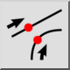
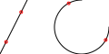

Etäisyys
Työkalurivi / kuvake:


Valikko: Tartunta > Etäisyys
Shortcut: S, D
Komennot: snapdistance | sd
Työkalurivi / kuvake:


Tarttuu pisteisiin, jotka ovat annetulla etäisyydellä viivojen tai kaarien päätepisteestä.
